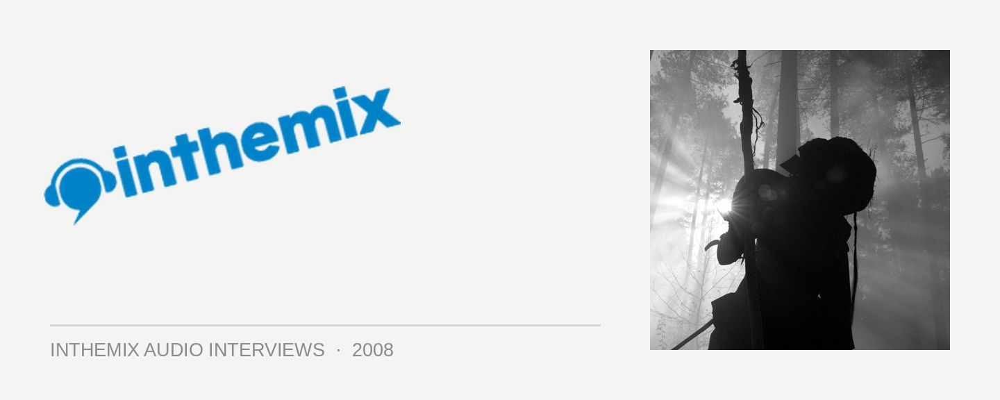

UNKLE [Audio]: Telling stories for moving pictures
STREAMING AUDIO INTERVIEW
James Lavelle is known equally by the world for being inconsistent and notoriously difficult, as he is for being a borderline musical genius. He may be one to shoot off his mouth at every opportunity (who could forget last year’s infamous swipe at Future Music Festival), but you can’t look past the brilliance of UNKLE. It’s been his primary creative project for nearly fifteen years with a revolving lineup of musical partners that’s included DJ Shadow, Tim Goldsworthy, Richard File and now Pablo Clements. And UNKLE’s output has been as gripping as it has been diverse. Lavelle slammed back into the spotlight last year with the epic War Stories, which saw him reinventing the wheel once again with a heavy digital-rock vibe, which somehow remained consistent with everything that had come before.
And here, we have something altogether different once again. End Titles… Stories For Film is somewhat of a companion piece to War Stories; instead of being billed as an entirely new UNKLE album, it’s instead a collection of soundtracks that Lavelle and co. have worked on over the past few years. But rather than coming off like an incoherent collection of studio outtakes, Stories For Film is a haunting piece of work that pulls together perfectly as a cohesive whole. It’s the moody soundscapes that were a subtle undercurrent in War Stories which are brought to the fore here.
“To me the album was cohesive in an eclectic fashion, in that we felt we could be a bit more self indulgent in that we weren’t trying to make what was meant to be the next album,” Lavelle told ITM. “The end result is a combination of what was going on with War Stories and the records that came before, having a bit more of that midtempo groove going on… Most of the tracks come out that way because of the brief you’ve been given, in the context of the project you’ve been working on.”
James Lavelle talks to ITM’s Angus Paterson about telling stories for moving pictures.
UNKLE’s End Titles… Stories For Film is out now through POD/Inertia, check out the ITM review.